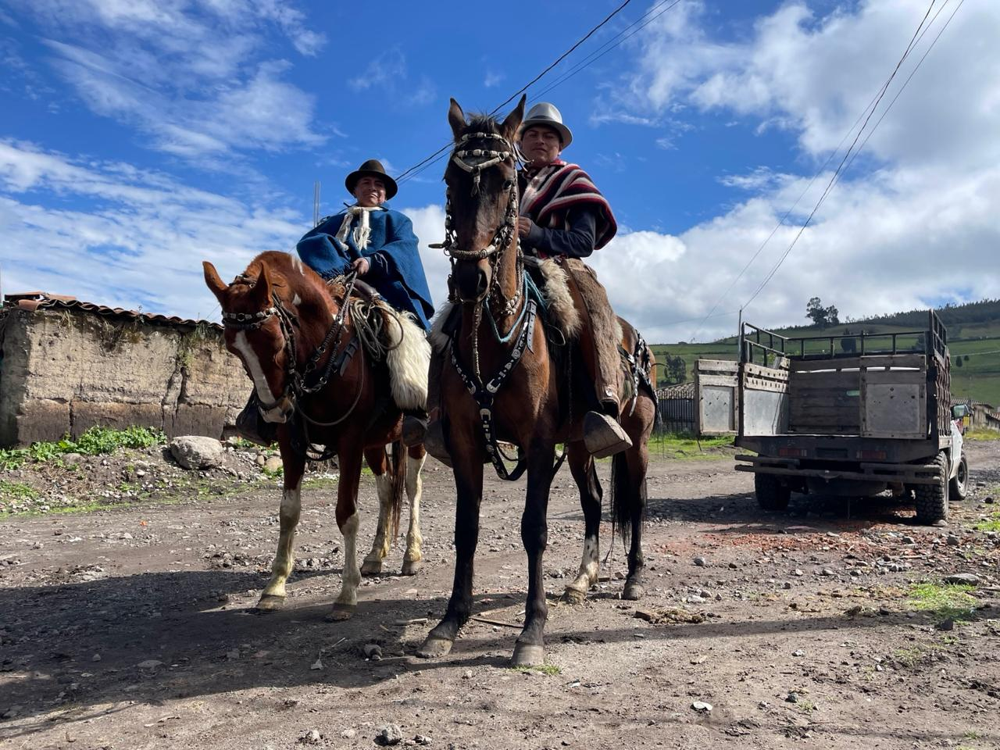
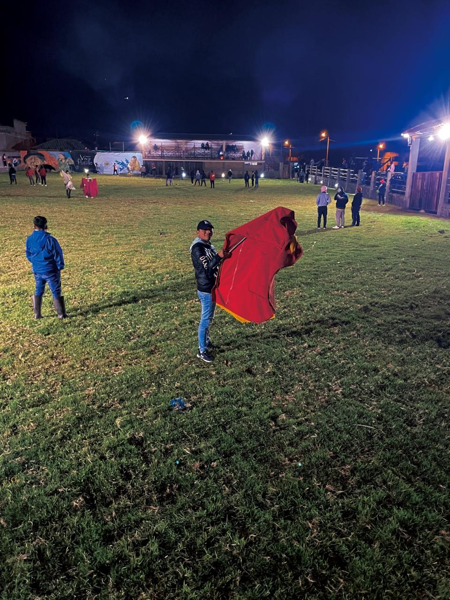
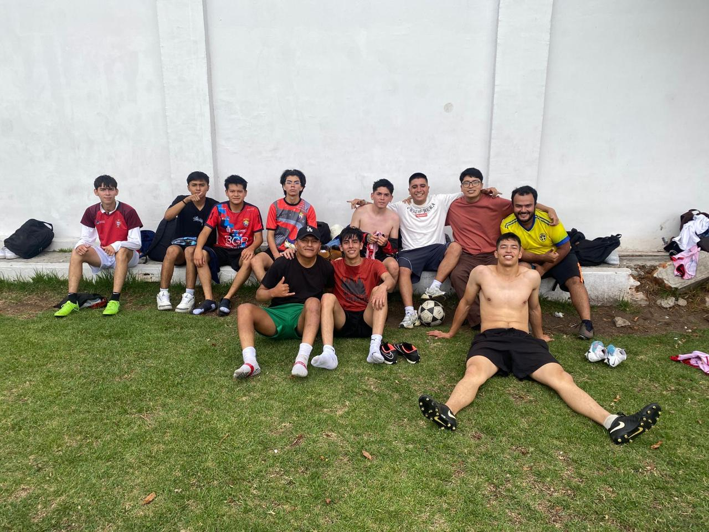
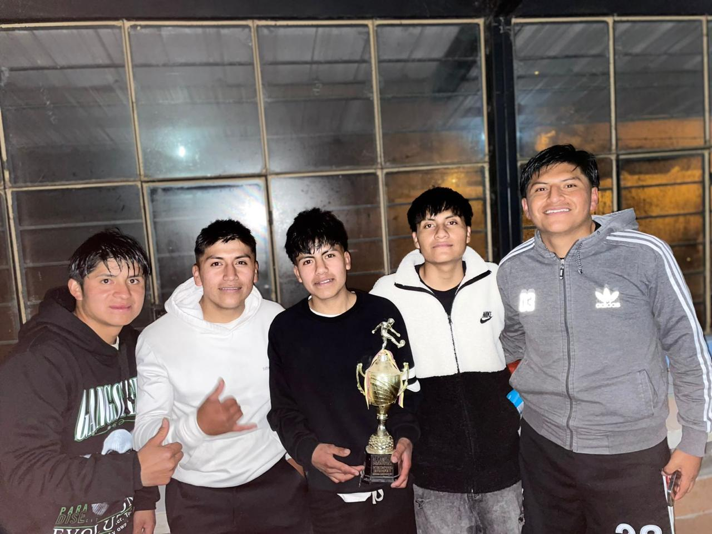

En mi tiempo libre me gusta jugar fútbol y montar a caballo.
También me gusta participar en actividades tradicionales de mi comunidad, como torear toros durante las festividades.
Disfruto mucho pasar tiempo con mis amigos practicando deportes y compartiendo momentos especiales.
Además, me gusta aprender sobre tecnología y explorar nuevas herramientas digitales.



